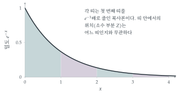

STEP III 2021, 문제 11
다음으로 넘어가기 전에 문제를 먼저 읽어 보자. 이 문제는 OCR에서 내려받을 수 있는 2021년 STEP 문제지 모음(zip 파일)의 STEP III 문제지에 있다: www.ocr.org.uk/Images/696588-2021-past-papers.zip
도입
어떤 방사성 원자가 백만 년 동안 붕괴하지 않은 채 실험실에 놓여 있었다고 하자. 이 원자는 이제 곧 붕괴할 “때가 된” 것일까? 그렇지 않다. 다음 1초 동안 이 원자가 붕괴할 확률(probability)은 방금 만들어진 원자의 경우와 정확히 같다. 방사성 원자는 나이를 먹지 않는다. 붕괴할 때까지의 대기 시간은 지수분포(exponential distribution)를 따르며, 이 분포를 규정하는 성질은 바로 기억이 없다는 것이다.
이 문제는 무기억성을 인상적인 형태로 보여 준다. 지수분포를 따르는 대기 시간을 정수 단위 부분과 소수 부분으로 나누어 보자. 놀랍게도 이 두 조각은 서로 독립(independent)이다. 즉 몇 시간을 꽉 채워 기다렸는지 안다고 해서 나머지 분에 대해 알 수 있는 것은 아무것도 없다. 또한 이 문제는 연습문제에서, 버스를 기다리는 시간이 왜 버스 사이의 간격보다 길게 느껴질 수 있는지도 설명해 준다.
시작하기 전에
\(x \geq 0\)일 때 \(\mathrm{P}(X > x)\)는 무엇인가? \(\mathrm{P}(X > s + t \mid X > s)\)는 무엇인가?
\(\mathrm{P}(X > x) = \int_x^\infty\lambda e^{-\lambda u}\,\mathrm{d}u = e^{-\lambda x}\)이다. 따라서 \(\mathrm{P}(X > s + t \mid X > s) = \frac{e^{-\lambda(s + t)}}{e^{-\lambda s}} = e^{-\lambda t} = \mathrm{P}(X > t)\)이다. 즉 이미 \(s\)만큼 기다렸더라도, 남은 대기 시간은 처음부터 새로 기다리는 경우와 같은 분포를 따른다. 이것이 무기억성(memoryless property)이다.
차근차근 풀기
단계 1 정수 부분
\(Y = n\)인 것은 정확히 \(n \leq X < n + 1\)일 때이다. \[\mathrm{P}(Y = n) = e^{-\lambda n} - e^{-\lambda(n + 1)} = (1 - e^{-\lambda})e^{-n\lambda}. \qed\] 따라서 \(Y\)는 기하분포(geometric distribution)를 따른다. 정수 단위 하나하나를 확률 \(e^{-\lambda}\)로 “버텨 내는” 셈이다.
단계 2 소수 부분
\(Z < z\)는 \(X\)가 구간 \([n, n + z)\) 중 하나에 놓인다는 뜻이다. 이 구간들의 확률을 모두 더하라.
\[\mathrm{P}(Z < z) = \sum_{n \geq 0}\bigl(e^{-\lambda n} - e^{-\lambda(n + z)}\bigr) = (1 - e^{-\lambda z})\sum_{n \geq 0}e^{-\lambda n} = \frac{1 - e^{-\lambda z}}{1 - e^{-\lambda}}. \qed\]
단계 3 \(Z\)의 평균
\([0, 1]\)에서 값을 갖는 확률변수에 대해 \(\mathrm{E}(Z) = \int_0^1\mathrm{P}(Z > z)\,\mathrm{d}z\)이다. 이를 이용하라.
\(c = 1 - e^{-\lambda}\)로 두면 \(\mathrm{P}(Z > z) = 1 - \frac{1 - e^{-\lambda z}}{c}\)이므로 \[\mathrm{E}(Z) = 1 - \frac1c\Bigl(1 - \frac{1 - e^{-\lambda}}{\lambda}\Bigr) = 1 - \frac1c + \frac1\lambda = \frac1\lambda - \frac{e^{-\lambda}}{1 - e^{-\lambda}} = \frac1\lambda - \frac{1}{e^\lambda - 1}. \qed\] (\(\lambda\)가 작을 때, 즉 대기 시간이 길 때 이 값은 \(\frac12\)에 가까워진다. 소수 부분이 거의 균등분포를 따르기 때문이다. \(\lambda\)가 클 때는 이 값이 \(\frac1\lambda\)에 가까운데, \(X\)가 거의 항상 \(1\)보다 작기 때문이다.)
단계 4 독립성
\[\mathrm{P}(Y = n, z_1 < Z < z_2) = \mathrm{P}(n + z_1 < X < n + z_2) = e^{-\lambda n}\bigl(e^{-\lambda z_1} - e^{-\lambda z_2}\bigr).\]
소문항 (i)과 (ii)를 이용하여 \(\mathrm{P}(Y = n)\,\mathrm{P}(z_1 < Z < z_2)\)와 비교하라.
(i)과 (ii)에서 \(\mathrm{P}(Y = n)\mathrm{P}(z_1 < Z < z_2) = (1 - e^{-\lambda})e^{-n\lambda}\cdot\frac{e^{-\lambda z_1} - e^{-\lambda z_2}}{1 - e^{-\lambda}}\)이고, 이는 위의 값과 같다. 따라서 \(Y\)와 \(Z\)는 독립이다.■

돌아보기
조각별로 더하기. \(Z\)의 분포와 결합확률 모두 구간 \([n, n + 1)\)들에 대한 확률을 더해서 얻었다.
꼬리 공식. \(\mathrm{E}(Z) = \int\mathrm{P}(Z > z)\,\mathrm{d}z\)를 이용하여 확률밀도함수를 구하지 않고 넘어갈 수 있었다.
인수분해는 곧 독립성. 결합확률이 \(n\)의 함수와 \(z_1\), \(z_2\)의 함수의 곱으로 분리되었다.
숨은 수학
지수분포가 특별한 이유
\(Y\)와 \(Z\)의 독립성은 \(e^{-\lambda(n + z)} = e^{-\lambda n}e^{-\lambda z}\)에서 곧바로 나오며, 이는 모습을 바꾼 무기억성이다. 사실 지수분포는 기억이 없는 유일한 연속분포이다. 모든 \(s, t \geq 0\)에 대해 \(\mathrm{P}(X > s + t) = \mathrm{P}(X > s)\mathrm{P}(X > t)\)이면, \(g(t) = \ln\mathrm{P}(X > t)\)는 \(g(s + t) = g(s) + g(t)\)를 만족하고, (\(g\)가 단조함수이면) 이로부터 반드시 \(g(t) = -\lambda t\)가 된다. 그래서 지수분포는 누적되는 것 없이 “무작위로” 일어나는 사건의 대기 시간을 모형화하는 데 쓰인다. 방사성 붕괴, 손님의 도착, 마모되지 않는 전자 부품의 고장이 그 예이다.
최솟값과 대기 시간의 역설
\(X_1\)과 \(X_2\)가 각각 비율 \(\lambda_1\)과 \(\lambda_2\)를 갖는 서로 독립인 지수분포 확률변수이면 \(\mathrm{P}(\min > x) = e^{-\lambda_1x}e^{-\lambda_2x}\)이므로, 최솟값은 비율 \(\lambda_1 + \lambda_2\)인 지수분포를 따른다. 서로 독립인 두 무작위 사건 중 먼저 일어나는 것을 기다리는 일은, 두 비율을 합친 비율로 일어나는 사건 하나를 기다리는 일과 같다(연습문제의 STEP III 2002 Q13). 무기억성은 대기 시간의 역설(waiting-time paradox)도 설명해 준다. 버스가 평균 간격 \(10\)분으로 무작위로 도착한다면, 무작위 시각에 도착한 승객은 평균 \(5\)분이 아니라 \(10\)분을 기다린다. 남은 대기 시간에는 기억이 없기 때문이다. 그리고 승객이 도착한 시점을 포함하는 간격의 길이는 평균 \(20\)분인데, 긴 간격일수록 그 안에 도착할 가능성이 크기 때문이다.
1910년에 어니스트 러더퍼드(Ernest Rutherford)와 한스 가이거(Hans Geiger)는 방사성 원천에서 방출되는 알파 입자의 수를 \(7.5\)초 간격으로 세었고, 그 개수가 푸아송(Poisson) 분포를 따른다는 것을 발견하였다. 수학자 Harry Bateman은 방출이 일정한 비율로 서로 독립적으로 일어난다면 바로 그렇게 되어야 함을 보였다. 이때 방출 사이의 시간 간격은 지수분포를 따른다. 지수분포를 따르는 간격으로 이어지는 사건들의 흐름인 푸아송 과정(Poisson process)은 오늘날 시간 속의 무작위성을 나타내는 기본 모형으로, 전화 통화, 보험금 청구, 신경세포의 발화 등에 쓰인다. 다음 절인 12.19 절에서는 이를 공간으로 확장한다.
사고 기술
두 확률변수의 결합확률이 한 변수의 함수와 다른 변수의 함수의 곱으로 인수분해되면 두 확률변수는 독립이다.
대학에서는 결합확률밀도함수의 인수분해가 독립성을 판정하는 표준적인 방법이며, 다변량 문제에서 독립인 성분을 알아보는 방법이기도 하다. 예를 들어 12.22 절에서 정규분포를 따르는 점의 반지름과 각이 그러하다.
더 도전하기
두 버스 노선. STEP III 2002, 문제 13에 도전해 보라. 두 지수분포 확률변수의 최솟값을 이용하여 다음 버스까지의 대기 시간을 구하는 문제이다.
기억이 없는 이산분포. 기하분포에 기억이 없음을, 즉 \(\mathrm{P}(Y \geq m + n \mid Y \geq m) = \mathrm{P}(Y \geq n)\)임을 보여라.
대기 시간의 역설. 버스가 비율 \(\lambda\)인 푸아송 과정으로 도착한다. (\(t\)가 클 때) 고정된 시각 \(t\)를 포함하는 간격의 기대 길이가 평균 간격의 두 배인 \(\frac2\lambda\)임을 보여라.
\(Z\)의 확률밀도함수. \(Z\)의 확률밀도함수를 구하고, \(\lambda = 1\)과 \(\lambda = 5\)일 때 그 그래프의 개형을 그려라.
더 읽을거리
Geoffrey Grimmett & Dominic Welsh, Probability: An Introduction (Oxford University Press). 지수분포와 푸아송 과정을 다룬다.
Sheldon Ross, Introduction to Probability Models (Academic Press). 지수분포, 푸아송 과정, 대기행렬을 다룬다.
David Spiegelhalter, The Art of Uncertainty (Pelican). 일상생활 속의 무작위성과 기다림을 다룬다.